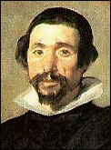

En el día de la exaltación de la Cruz:
En el día de la exaltación de la Cruz:el Cristo de Velázquez.
Para verla en grande: acá (382 x 584) o acá (600 x 900).
{kind=link}
De todas las imágenes de Jesús que conozco, creo que
ésta es mi preferida.
Milagro del arte, cuando alcanza a reflejar la grandeza, a imponerse y a conmover,
a través de la elegancia, el recato, el silencio (y ... es Velázquez).
Y en ninguna otra crucifixión se me impone, como en esta, la
"reyecía" de Jesús; la misma
corona de espinas, y la inscripción (ironías al cuadrado), se transfiguran...
El vasco Unamuno le dedicó un largo poema (en endecasílabos blancos);
el cual no me animaría a recomendar --ni como pura poesía
ni como cosa cristiana-- pero que , si mis recuerdos no me engañan,
fue hace mucho tiempo un empujoncito más hacia el cristianismo...
Tengo que releerlo, algún día de estos.
A propósito de las traducciones automáticas, Tom, de Disputations me dice que Babelfish en todo caso sabe más español que él; y me aclara: "I already can read San Juan and Santa Teresa in the original. I just can't understand them"....
Jah... Pero, si nos ponemos a tomar las palabras en su significados más estrictos .... entender, lo que se dice entender, yo tampoco puedo decir que los entiendo.
Siguiendo con el tema, Juan de Mairena me aporta esto:
-
"Not by might, nor by power, but by my Spirit", says the Lord of Hosts
(Zacarias, 4, 6)
"No cerca pudo ni por energía, pero por mi alcohol" dice a SEÑOR de anfitriones
(Google)
Pero tiene su lógica. Veamos: para traducir "fast" prefiere "rápido" a "ayuno"; para traducir "ayuno" prefiere "uninfomed one" a "fasting"; y para traducir "spirit" prefiere "alcohol" a "espíritu". O sea: ante la duda siempre preferir la traducción "laica". Después de todo... esa estrategia es la que mayor probabilidad de éxito tiene ... cuánta gente puede andar en internet hablando de "ayuno" o de "espíritu"... ?
Y ya conocía esa traducción de "spirit". Alguna vez encontré al pie de una página religiosa (traducida del inglés al español, claro) una frase que decía algo como: "Esta página está para el alcohol santo". En Google se encuentran muchos ejemplos.
Y una cosa más que descubro ahora, y que viene a confirmar un poco eso de que
el vocabulario religioso "no existe" ....
El traductor español-inglés no conoce la palabra "santo" !
Ver para creer.
Y después de esto... qué díficil es resistir la tentación de la jactancia... La jactancia (vana, como casi todas las jactancias) de ser uno un "contracultural"....
Dylan publica un lindo soneto de Dante Gabriel Rosetti. Soneto que conocí hace poco, en un grupo de traducción de poesía. Acá va el resultado, mérito de Alejandro González, con colaboraciones del grupo
-
Soneto: monumento del momento,
recuerdo desde el alma sempiterna
a hora muerta inmortal. Mira que sea
(para rito lustral o cruel portento),
de su plenitud ardua reverente.
Talla su forma de marfil o de ébano,
según lo rijan Día o Noche; el tiempo
vea su cresta en perlas floreciente.
El soneto es moneda. Nos revela en su cara
el alma; y en su cruz, qué Poder le es propicio:
bien sirva de tributo a la augusta llamada
de la Vida, o de ofrenda de alta corte a Cupido,
o en medio de lo oscuro del cavernoso muelle
de Caronte en la palma compre el paso a la Muerte.
San Juan Crisóstomo murió el 14 se septiembre, sin embargo su santo fue ayer. ¿Por qué ? Es para no superponerlo con la fiesta de la Exaltación de la Santa Cruz que se celebra hoy.
A algunos (pocos, creo) protestantes les parece mal la costumbre católica de venerar la Cruz, instrumento del sufrimiento y muerte de Cristo; la Iglesia, además de aprobar esta devoción que se multiplica en crucifijos, en la "señal de la cruz", le ha otorgado esta fiesta propia.
El motivo histórico de la fiesta (me acabo de desayunar) está en el link anterior, y en éste; acá parece confundir el hecho con la llamada "Invención de la Cruz": el descubrimiento de la verdadera Cruz en Jerusalén por Santa Elena (siglo V); hecho novelado -y bien novelado- por Evelyn Waugh en "Elena".
Las lecturas de la misa de hoy . están elegidas para la fiesta: del Antiguo Testamento, el episodio de la serpiente de bronce:
-
Yavé le dijo a Moisés:
"Hazte una serpiente-ardiente y colócala en un poste. El que haya sido mordido, al verla, sanará".
Moisés hizo una serpiente de bronce y la puso en un poste.
Cuando alguien era mordido por una serpiente, miraba la serpiente de bronce y se sanaba.
Y como si esto fuera poco, y por el mismo precio, nos cae el famosísimo versículo 3:16.
-
Sin embargo, nadie ha subido al Cielo sino sólo el que ha bajado del Cielo, el Hijo del Hombre.
Recuerden la serpiente que Moisés hizo levantar en el desierto: así también tiene que ser levantado el Hijo del Hombre, y entonces todo el que crea en él tendrá por él vida eterna.
Así amó Dios al mundo: Le dio al Hijo Unico, para que quien cree en él no se pierda, sino que tenga vida eterna. Dios no envió al Hijo al mundo para condenar al mundo, sino para que se salve el mundo gracias a él.
(Evangelio según San Juan, 3:15-17)
[*] Me acuerdo ahora de una historia que se cuenta del Cura de Ars,
sobre esto de "mirar a Cristo".
El cura veía a un campesino que llegaba a la iglesia a rezar y
se pasaba horas y horas ante el Cristo;
y empezó a extrañarle que un campesino, evidentemente humilde e "inculto",
se demorara tanto, qué tipo de oración haría... Un día, finalmente, se
le acerca y le dice:
- "Disculpe. Usted... ¿qué es lo que hace? ¿Qué le reza? ¿Qué le dice?" .
- "Yo no le digo nada, padre.... ", contesta el campesino.
- "Entonces... ¿qué hace acá todo el día?"
- "Pues .... yo lo miro y él me mira".
Y este dicho del campesino entró en el nuevo
Catecismo
de la Iglesia.
conté mi soledad envejecida; conté las noches de mis días.
Mis huesos cantan el misterio del mundo.
El agua perturbada de mi reposo.
Me veo en mi gemido según pavores de inocencia.
Paz, paz:
oído de mis palabras.
El ruego alcanza oído a mis palabras
carne sanada;
y hay espanto de luz en nuestras manos.
Jacobo Fijman
Hablando de idiomas ... la página de "metal boliviano" , citada en Mandiyú es extraordinaria. Primer párrafo:
-
Cuando empezamos diseñar "Sitio de Metal Boliviano",
nuestra experiencia en diseño de Webs eran básicas,
desde entonces ha pasado cerca de dos años y las
mejoras a éste sitio que es de los bolivianos presenta notables avances.
Y la frase al pie de la página a modo de proclama, que motivó el post original, es ... enternecedora : "Luchemos por nuestro surgimiento"
Me inquieta un poco pensar que hay norteamericanos que tratan de leer esta página con los traductores on-line de Babelfish o similares ...
Así, por ejemplo, la frase "dejan la impresión de que el ayuno propiamente dicho no sirve de mucho que digamos" la traduce como: "they leave the impression that the uninformed one itself does not serve as much that we say ".
Going the other way round ... Si le pedimos que nos traduzca del inglés al castellano el post de Disputations sobre el ayuno (= fast o fasting) , la frase inicial "How I Learned to Stop Worrying and Love the Fast" la traduce: "cómo aprendí parar el preocuparme y amar el rápido " .
Magnífico. Encima, hay que decir que acá escribo más en argentino que en
español; y ni siquiera un argentino muy correcto "that we say"
(que digamos)...
Así que, paso el aviso:
-
Sorry, guys. Babelfish sucks (and all the others too) . You've been warned.
You'd better try to learn some spanish (think about this: you'd be able to read the original Santa Teresa and San Juan de la Cruz !) or ask me for a -not good ... but not so bad- translation. All the same, many thanks to all!
Pequeños cambios cosméticos en el weblog... con temor y temblor .Espero que para mejor.
Se aceptan opiniones.
Más difícil (y con menos oportunidades para el arrepentimiento) me fue, hace un par de horas, elegir color para pintar el departamento.
De paso; ayer, uno de los pocos días en que no posteé nada, fue el día con más visitas (al weblog, digo; no al departamento...por suerte). Espero que sea mera casualidad...
Otro "clip" de tangostore.com: Dandy, en versión de su autor, Lucio Demare, en piano solo. Un tango que me gusta, tal vez más para tocar que para cantar; una melodía muy rica y expresiva (lástima que acá falta el estribillo, y no encuentro en internet ninguna versión en mp3 ni en midi completa).
Anteayer, aniversario del atentado a las torres, comentaba sobre las pasiones de la multitud; y que, por más que se vistan a veces de homenaje-aplauso-admiración en el fondo no son más que expresiones del resentimiento social más bajo. Resisto la tentación de poner varios ejemplos, de acá cerquita y ayer nomás; si de conseguirse enemigos se trata, consigámoslos de peso y por cuestiones de peso.
Pero hablando de conseguirse enemigos (y por cuestiones de peso) :
Hoy, 13 de septiembre, el santoral recuerda a San Juan Crisóstomo.
Quizás el más grande de los "padres griegos" [se conocen como "Padres de la Iglesia" los obispos, sacerdotes, escritores, apologistas, etc de los cinco o seis primeros siglos de la Iglesia cuya enseñanza dio forma a la doctrina ortodoxa católica; se clasifican en Latinos (occidentales) y Griegos (orientales); acá hay un resumen y listado].
Nacido alrededor del año 347 en Antioquía, estudió retórica, se hizo anacoreta (monje solitario en el desierto). Ya cuarentón, la salud lo obliga a volver a la ciudad, donde es ordenado sacerdote y más tarde, (398) obispo de Constantinopla.
Crisóstomo (= "boca de oro") es un apodo popular que se ganó por su elocuencia.
Sus sermones -varios se conservan escritos- eran impresionantes. Y combinaban
el estudio de las Escrituras con la exhortación moral; y sobre todo,
y en aquel ambiente de relativo lujo, contra las riquezas y los abusos
de los poderosos.
A diferencia de tantos que uno escucha, las puteadas los reproches
no los hacía en tercera persona, sino en segunda persona (y en primera):
no se trataba del simpático predicador
que se une a su simpática feligresía para quejarse de los políticos, y todos
muy tranquilos. El no hablaba de "ellos, los malos ricos" , sino de
"vosotros, los malos ricos". Suya es, si no recuerdo mal, la frase
que tanto gustaba a Bloy: "En el fondo de toda fortuna, hay un crimen".
No se ganó con estas cosas la aprobación de los poderosos, ni de los medios. Expulsado dos veces por el emperador, murió camino al destierro el 14 se septiembre del año 407.
Es el patrono de los predicadores; de los que tienen boca y l aobligación de usarla; (y de hacerla, en lo posible, de oro).
Dice Steven de Flos Carmeli: "Ms. Knapp, once again showing more guts than twenty or thirty postculturist posturing professors dares to post this beautiful, and possibly controversial piece by Mark Twain. God bless her for the reminder. ".
Indeed ... digo ... es cierto ... hay
que tener ... guts ...
No para ser "pacifista"; no se trata de eso.
Se trata de resistir a las pasiones colectivas. Las pasiones de la multitud,
tengan las etiquetas que tengan,
casi siempre están alimentadas de odio; casi siempre son "carnales".
y casi siempre envenenan y matan el espíritu.
(Y los "casi", casi sobran).
Anyway: vaya un saludo y condolencia para los lectores de EEUU, en este día amargo.
Paseando el domingo por las librerías de calle Corrientes, en las mesas de saldos (no usados) encontré y compré (a $2 !) una rara joyita: la "Nueva historia de Mouchette", de Bernanos.
Uno de los libros más sombríos y más angustiantes que he leído.
Yo había visto la película de Bresson,
más conocida que el libro.
Pero uno tiene más sensibilidad para la literatura que para el cine,
no hay nada que hacerle.
Terrible (qué pueriles resultan después, en comparación, los
horrores epidérmicos de tipos como Lautreamont y compañía ...)
Más sobre la película acá,
acá,
acá y
acá.
Está bastante bien la partecita "religiosa" del reportaje a Larry Wall (pregunta 7) que comentábamos ayer.
Como puntos en contra, yo anotaría:
- que ese tono ingenioso-simpático-enfático-entusiasta (tan típico de conferencistas yanquis, por otra parte) me empalaga
- que la analogía entre la fe y la teoría de información cuántica es ingeniosa pero no ilumina demasiado; y difícilmente aporte algo sustancial a la cuestión
- que el énfasis puesto en la "libertad" y la "creatividad" en contra de la "sistematización" parece desmedido
- que la relación de lo anterior con el lenguaje (PERL) me resulta descolgada; y en particular, ese concepto ("There's more than one way to do it.") me parece en realidad uno de los puntos débiles de Perl. Yo siento (y creo que no estoy sólo en esto) que Perl es un lenguaje "individualista", y eso es un defecto grave
- "acaso buena parte del problema -le dice a un ateo- proviene de que vos estás ocupado en descreer de un dios muy diferente del que yo estoy ocupado en creer" ; "en una discusión teológica, más que en cualquier otra, es fácil hablar en planos ortogonales, y ni darse cuenta de eso"
- La analogía cuántica, tiene su gracia; la imagen del "qubit" (asociado a la proposición "Dios existe" o "Dios es bueno"), que debe estar en uno de los dos estados ( 0-1 ; verdadero-falso) pero sólo a partir del momento en que el "observador" lo "observa" ... los agnósticos que se resisten a "observar" para que "la función de onda no colapse" en un estado que -cualquiera de los dos- resultaría difícil de aceptar.
- "si Dios crea el universo, como un Autor crea una historia, el lugar apropiado para contemplar esto no está en los bordes difusos [el comienzo del cosmos] sino el corazón de la historia. Y yo, personalmente estoy convencido de que Jesús está en el corazón de la historia."
- El cristiano suele preguntarse "¿Qué haría Jesús en esta situación?". Desafortunadamente, rara vez acierta con la respuesta correcta : "Algo inesperado". Si se trata del mismo Creador, y de su propia historia, no podemos esperar menos que eso: soluciones creativas.... Y también se espera de nosotros que seamos creativos. Y que ayudemos a otros a serlo.
Bien de todas maneras por Larry Wall, y por varios que intentaron (de uno y otro lado) discutir con honestidad intelectual en un tema donde eso es supremamente difícil. Y en ese ambiente.. Como dijo uno:
-
The slashdot crowd is a tough crowd when it comes to religion, so it takes some guts
to say Jesus is the way...
Me entero por Flos Carmeli que la estructura de la poesía de Dylan Thomas que posteamos hace tiempo ("Do not go gentle...") es una forma poética conocida como "villanelle". Y pone otro ejemplo.
Dos posts en Disputations sobre el tema del ayuno. Tema del que jamás -si la memoria no me falla- oí nada en la iglesia; solamente, cuando se trata de los días de ayuno obligatorio (viernes santo y miércoles de ceniza) alguna referencia, melancólicamente acuosa, a ayunar de los "placeres habituales" (TV, cigarrillos) y/o la recomedación de, en lugar de gastar plata en darse tal gusto, darla en limosna. Cosas que estarán muy bien, pero poco tienen que ver con el ayuno; y más bien dejan la impresión de que el ayuno propiamente dicho no sirve de mucho que digamos.
John por el contrario sugiere que "abstenerse de comida -no de TV, weblog o "tu actividad favorita"- es la forma de ayuno que mejor conviene al hombre para crecer en santidad. No es casualidad que tantos pueblos de la historia han empleado este medio para intentar acercarse a la divinidad."
También hay unos consejos prácticos, para ayunar como Dios (la Iglesia) manda.
Interesante (pienso, mientras digiero la media pizza con cerveza)...
Tiendo a simpatizar con el punto de vista de John -que indudablemente sabe más que yo del tema-. Aunque recuerdo vagamente algo de algún libro, no recuerdo si del P. F. Faber o (más probable) de Ronald Knox, donde medio justificaba esa tendencia moderna de suavizar las penitencias corporales.... Pero no estoy seguro de eso (y no puedo consultar: estoy pintando el depto, y tengo los libros amontonados en la piecita de servicio). Y menos de que una cosa contradiga la otra.
En inglés, una canción de amor:
Título de la canción.
Letra y audio
Muy pero muy gracioso; recuerda cosas de nuestros Les Luthiers, en sus mejores momentos.
-
Declaration of my feelings for you
Elaboration on those feelings
Description of how long these feelings have existed
Belief that no one else could feel the same as I
...
Title of the song
Naïve expression of love
Reluctance to accept that you are gone
Request to turn back time
And rectify my wrongs
Repetition of the title of the song
Justo ayer me reía con el capo de la "Asociación de Escépticos de Australia", (el que se negaba a priori a aceptar los milagros porque eso implicaría depreciar la ciencia de los últimos 2000 años -cosa incomprensible... empezando por el período de tiempo citado); y hoy encuentro este reportaje en Slashdot a Larry Wall, el creador del lenguaje Perl; todo un personaje para los geeks; es conocidamente cristiano (no católico) y una de las preguntas que contesta del público es sobre el tema. No estoy seguro de que me vaya a gustar demasiado (cuando Larry Wall se pone en modo "sabio", me embola un poco) pero no deja de ser interesante. Y acaso más interesante (para mí al menos) es ver la tonelada de comentarios (casi 1000 entradas) del público... y aunque no todas se refieren al tema religioso (era sólo una de las diez preguntas) , sospecho que la mayoría tiene algo que ver...
Mirando por arriba, veo que alguno cita el Silmarillion de Tolkien, para argumentar sobre el libre albedrío, Dios, y esas cosas.
Veremos.
De los weblogs de EEUU:
Buenos posts en From the Anchor Hold, en Disputations y en Flos carmeli.
A comentar después, tal vez.
Lecturas de la misa de hoy.
El fragmento de la carta de San Pablo es tal vez lo más políticamente incorrecto del nuevo testamento, para estos tiempos (la referencia condenatoria a los "afeminados"; "perros" en el original, si no me equivoco).
En otros tiempos había otras piedras de escándalo; sin ir más lejos, este mismo fragmento de San Pablo incluye algo que parece una jactancia mayúscula ("¿No saben que un día nosotros, los santos, juzgaremos al mundo?") , y que más de un siglo atrás, enfurecía a Nietzsche (en su "Anticristo", si no recuerdo mal). .... A ver... busquemos.... en inglés ... acá; en castellano ... acá (cap 45). También ver acá.
Es de los libros que, sin ser tonto, más se aproxima a la caricatura tonta de Nietzsche que tantos comecuras del siglo pasado ha tenido el placer de forjarse.
Y recuerdo cuando yo leía esto, allá por mis 18 años, tratando (con cierto éxito) de exaltarme en ese odio. El librito, de la biblioteca pública de pueblo, tenía subrayada la última página, la que trae el llamamiento a destruir el cristianismo y "trastocar los valores"; alguien había escrito al margen : "¡Sublime!!!".
Dylan postea (en inglés y en latín) esa invocación al Espíritu Santo que se reza en la misa de Pentecostés. La adjudica a Stephen Cardinal Langton (c. 1155-1228) 44th Archbishop of Canterbury, 1207-28, de lo cual no tenía la menor idea. ¿Es así? ¿Alguien sabe?
Como sea, dado que es una oración bellísima, acá va:
y envía desde el Cielo
un rayo de tu luz.
Ven Padre de los pobres
ven a darnos tus dones,
ven a darnos tu luz.
Consolador lleno de bondad,
dulce huésped del alma,
suave alivio de los hombres.
Tú eres descanso en el trabajo,
templanza en las pasiones,
alegría en nuestro llanto.
Penetra con tu santa luz
en lo más íntimo
del corazón de tus fieles.
Sin tu ayuda divina
no hay nada en el hombre,
nada que sea inocente.
Lava nuestras manchas,
riega nuestra aridez,
cura nuestras heridas.
Suaviza nuestra dureza,
elimina nuestra frialdad,
corrige nuestros desvíos.
Concede a tus fieles
que confían en Ti
tus siete sagrados dones.
Premia nuestra virtud,
salva nuestras almas,
danos la eterna alegría,
Amén. Alelluia.
Una noticia en Yahoo (en inglés). No se sabe qué es más increíble: si el hecho, o la nota.
Título: "Thousands flock to Catholic Church in Australia's west to see 'weeping' Madonna statue "
O sea "Miles afluyen a Iglesia Católica en el oeste de Australia para ver a una estatua de la Virgen que llora".
Aceptemos las comillas dubitativas en "weeping"; vale. Lo que no vale es poner "Catholic Church" con mayúscula, muchachos. Esos miles no afluyen a la "Iglesia Católica", sino a una "iglesia (templo) católica".
Para peor, la nota termina con esta frase :
The Catholic Church in Australia was not immediately available for comment
como si "Catholic Church" fuera una persona o un comité.... Muchaachos!!!
Aunque pensándolo un poco, a la frase (como suele suceder con las frases estúpidas)
se le puede sacar jugo. ... "The Catholic Church is not available for comment " .... Hmmm
Mejor no nos metamos en aguas profundas.
Vamos a aguas superficiales, pues. El toque más risueño de la nota (que ya es decir) :
-
But the head of the local branch of the Australian Skeptics Association
said Monday the weeping could probably be explained.
"Either this is a miracle and that means the whole of science can be written off for the last 2,000 years, or it's a natural phenomenon that can be readily explained — or it could be a trick", said John Happs, a university science lecturer.
¡ Alguien que me consiga el formulario de inscripción para la "Australian Skeptics Association" !
Hay muchas razones/factores/excusas para no casarse, como también para casarse. Wodehouse y Kierkegaard, en muy distintas venas, han dicho lo suyo -a favor y en contra; después acaso buscaré citas. Un amigo mío, con un hijo ya, sólo atina a excusarse con el tema de la fiesta de casamiento. Yo, llegado el caso, creo que más bien pondría como obstáculo (no diré insalvable, pero obstáculo al fin) la necesidad de asistir a esos "cursos prematrimoniales" de la parroquia... podría llegar a dudar de que semejante sufrimiento se viera compensado por todas las excelencias del matrimonio.
Seguramente exagero.
Pero la experiencia de el viejo oligarca
no resulta muy tranquilizadora.
Como se dice (o se decía?) por acá:
"de terror !".
-
...
Pero el sábado a la mañana las cosas ya empezaron a ponerse verdaderamente raras.
Primero que nada: había algo, con la pareja de mayor edad. que no me terminaba de cerrar . Jim, el hombre, había hecho algunas referencias a experiencias pasadas, tales como predicar y bautizar niños, que me habían llevado a sospechar que se trataba de un converso, ex ministro protestante; y sin embargo, por otro lado daba a entender que se había criado como católico. Quizás, pensé, yo había oído mal. Y entonces María Rosa, la mujer, comentó sobre el tiempo que había pasado en un convento, primero como novicia... y después como monja. ¿Monja??
No hubo más explicaciones, y no era el tipo de reuniones que daba para hacer preguntas. A la tarde, el programa del curso correspondía a la sección sobre "sexualidad humana", y las parejas debía contar cómo se había conocido. Resultó que Jim era efectivamente un cura, en ese momento, y María Rosa una hermana religiosa que vivía cerca de su iglesia. Según contó Jim, hubo "atracción física" a primera vista, "a pesar de que sólo podía verle este pedacito de su cara" (intenta un gesto cómico) "detrás de su velo".
Casi me caigo de espaldas.
...
y estas dos personas de algún modo habían sido convocadas y aprobadas para
ser la pareja mayor "mentora" del programa de instrucción
prematrimonial de la arquidiócesis de Washington.
Justamente cuando, el día anterior, se nos había marcado el paralelo entre la vocación
matrimonial y la vocación religiosa, mostrando cómo cada una requería virtudes
similares para mantener la fidelidad...
El mensaje era clarísimo: "el matrimonio es de por vida ...o hasta que encuentres
algo más interesante
...
Por la mitad, llegamos a la pregunta de Zorak. El padre Golden no quiso abordarla;
en cambio preguntó al grupo qué pensaba cada uno. Algunos habían
oido que los anticonceptivos eran pecado, a otros les parecía que estaba todo bien.
Alguien le preguntó al padre Golden qué pensaba, pero él se limitó a decir que mejor
lo conversábamos entre nosotros, antes (por supuesto, ya había quedado en claro
que nadie estaba realmente seguro, ni a favor ni en contra). En pocos
minutos la conversación fue degenerando en risitas, alguien hizo un chiste
sobre "ponerse el impermeable si está húmedo", y eso fue todo.
Próxima pregunta.
...
-
No supo más que de penas, y no dio nunca con la contricción,
ese dolor perfecto; ni con la atrición, ese dolor imperfecto al que se entregan
los pecadores arrepentidos para que se les restituya a la primera
gracia y continuar su vida penitencial hasta arraigarse en un estado
de paz y esperar la buena muerte
Pero él no da señales de haber tenido ninguna instrucción religiosa -aunque nombre mucho a Dios- que lo pudiera haber llevado a la salud espiritual.
Sin embargo, a pesar de todo lo quiero, y lo voy a ayudar.
...
Era de agua. Era flemático de temperamento y lo concibo
como existiendo en un mar agitado y oscuro.
...
Lautreamont me conocía y me conoce. Como Juez he tenido
que verlo. Me pidió que no lo olvidara. Que intercediera
por él ante Dios que es mi amigo.
Cayó nueva embajadora de Gran Bretaña en el Vaticano, y el Papa le tiró por la cabeza con un discursito (en inglés here),
-
Al acercarse el 11 de septiembre, Juan Pablo II pidió este sábado a los líderes mundiales combatir
el terrorismo --«crimen contra la humanidad»--combatiendo sus raíces, en particular la «injusticia»
y la «opresión».
Responder al terrorismo, afirmó el Papa, exige «tomar nuevas y creativas iniciativas políticas, diplomáticas, y económicas orientadas a acabar con las situaciones escandalosas de grave justicia, opresión y marginación, que siguen oprimiendo a innumerables miembros de la familia humana».
...
la comunidad internacional no puede seguir dejando de subrayar las causas que
llevan especialmente a jóvenes a perder la esperanza en la humanidad,
en la vida misma y en el futuro, y a caer en la tentación de la violencia,
el odio, y en el deseo de venganza a toda costa
Simone Weil llegó a Londres, desde EEUU, a fines de 1942, para participar de la Resistencia. Sus planes de entrar al territorio alemán, o de formar un cuerpo de enfermeras de guerra no dieron fruto ("esa mujer está loca", dicen que dijo De Gaulle), y le asignaron tareas "intelectuales": escribir y revisar textos sobre la situación; sobre todo para la reorganización de Francia después de la guerra. En esos pocos meses, (entre fines de 1942 y principios de 1943) produce, cada vez más sola y frustrada -bien veía que sus ideas no sintonizaban con la futura dirigencia francesa, sólo preocupados por "echar a los nazis y poner orden"- un material impresionante, por su densidad y calidad, sobre temas sociales. Fueron recopilados, en su mayoría en "Echar raíces" y "Escritos de Londres".
En abril de 1943 le diagnostican tuberculosis y es hospitalizada. Muere en agosto. Desde el hospital sigue escribiendo, cada vez más conciente de su "derrota"; se desliga de la Resistencia; y a sus padres les oculta cuidadosamente su enfermedad En su última carta, el 4 de agosto, (el 16 alcanzará a enviar unas líneas sueltas) en el proceso terminal de su enfermedad -se niega a comer lo que los médicos le exigen, algo que roza el suicidio- cuenta a sus padres anécdotas imaginarias de la vida londinense, en tono festivo; pero al final, a propósito de una mención culinaria que relaciona con los locos de Shakespeare, su máscara se quiebra un poco:
-
...
Me alegro de rectificar una información falsa que os había transmitido. Aquí se toma a veces como postre compota de manzanas en puré, sin ninguna mezcla, como nosotros.
Las mezclas se llaman "fruit fool".
Es un poco de compota de frutas en puré, mezclada con muchas custards (químicas) o gelatina, o con otra cosa.
El nombre es hermoso.
Pero estos "fools" no son como los de Shakespeare. Mienten, haciendo creer que son fruta, mientras que en Sh. los locos son los únicos personajes que dicen la verdad.
Cuando vi aquí Lear, me pregunté cómo es que desde hacía tiempo no había saltado a la vista de la gente (yo incluida) el carácter intolerablemente trágico de esos locos. Su dimensión trágica no consiste en las cosas sentimentales que se dice respecto a ellos; sino en esto:
En este mundo sólo los seres caídos en el último
grado de la humillación, muy por debajo de
la mendicidad, no solo sin consideración social,
sino mirados por todos como desprovistos de
la primera dignidad humana: la razón - solo ellos
tienen de hecho la posibilidad de decir la
verdad. Todos los otros mienten.
En Lear, es chocante. Incluso Kent y Cordelia
atenúan, mitigan, edulcoran, le ponen un velo a
la verdad, andan con rodeos, mientras no están
forzados o de decirla o de mentir lisa y
llanamente.
No sé lo que pasa con las demás obras que ni he visto ni he releído aquí (a excepción de 12th Night). Darling M., si releyeras un poco a Sh. con esta idea, encontrarías quizá aspectos nuevos.
El extremo de lo trágico es que, como los locos no
tienen ni título de profesor ni mitra de
obispo, y como nadie piensa que haya que prestar
atención al sentido de sus palabras -estando
todos, por adelantado, seguros de lo contrarío,
puesto que se trata de locos-, su expresión
de la verdad ni siquiera es escuchada.
Nadie, incluidos los lectores y espectadores de Sh.
desde hace cuatro siglos, sabe que dicen la verdad.
No verdades satíricas o humorísticas,
sino simplemente la verdad.
Verdades puras, sin mezcla, luminosas, profundas, esenciales.

¿Es ese también el secreto de los locos de Velázquez?
La tristeza de sus ojos ¿es la amargura
de poseer la verdad, de tener, al precio de una
degradación sin nombre, la posibilidad de
decirla, y de no ser escuchados por nadie?
(excepto Velázquez).
Valdría la pena volverlos a
ver con este interrogante.
{kind=link}
Darling M., ¿sientes la afinidad, la analogía esencial
entre esos locos y yo a pesar de la
Escuela, la cátedra y los elogios a mi «inteligencia»?
Esto es una respuesta más a «lo que tengo que dar».
Escuela, etc., son en mi caso ironías de más.
Es bien sabido que una gran inteligencia es a menudo paradójica, y a veces disparata un poco...
Los elogios de la mía tienen como finalidad
evitar la pregunta: «¿Dice la verdad o no?».
Mi reputación de «inteligente» es el equivalente
práctico de la etiqueta de locos de esos
locos. ¡Cuánto más me gustaría su etiqueta!
{kind=link}
Nada nuevo respecto a vosotros desde mi última carta (del 28 de julio; si no la recibís, mandadme un cable). Ni respecto a mí.
Mil besos, darlings, No perdáis la esperanza.
Sed felices.
Os estrecho muy fuerte en mis
brazos a los dos.
Simone
- ...
Hay que rezar. Todo lo demás es vano y estúpido. Hay que rezar para poder sufrir todo el horror de este mundo, hay que rezar para ser puro, hay que rezar para tener la fuerza necesaria para esperar.
Para el que reza, no hay desesperación ni amargura. Se lo digo yo. ¡Si usted supiera con qué derecho y con qué autoridad le hablo!
Usted conoce las miserias de la vida, pero desconoce el verdadero dolor. No ha recibido el verdadero golpe que rompe el corazón. Acaso no lo reciba nunca; muy pocos lo reciben, aunque crean lo contrario.
Es infinito el número de los hombres pueriles que creen sufrir sin medida, pero que en realidad sufren muy pooc. Es infinito el número de los que imaginan tener Fe, pero cuya fe no levantaría ni un grano de polvo. En cuanto a la Esperanza y la Caridad: ¿qué palabras han sido más prostituidas?
La Fe, la Esperanza, la Caridad ... y el Dolor, que es su sustrato, son diamantes; y como ud. sabe, los diamantes no abundan; y cuestan muy caro, no lo olvide.
Cuestan la Plegaria; joya, ella misma, de inestimable valor, que hay que conquistar; todo esto es elemental y es enorme.
Se trata de rezar, simplemente, pero con ansia poderosa. Hay que rezar largamente, pacientemente, sin preocuparse del fastidio ni del cansancio, hasta que llegue la devoción, y se la sienta arder en el corazón como una brasa. Entonces sí, entonces
puede sufrirse no importa hasta dónde.
...
Leon Bloy - fragmento de una carta - 16/2/1894